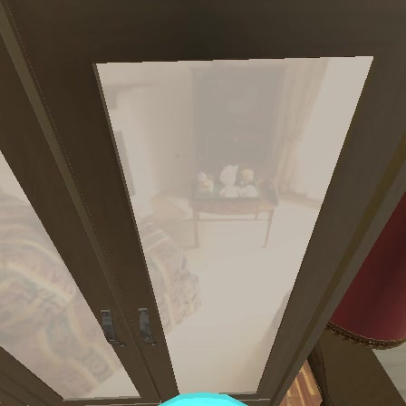

Three models on the same 13 tasks, seed 42. The latest delivered attempts replace the earlier records. Two provider-interrupted attempts count as unsuccessful; one budget-limited attempt has no saved frames.
Observed frames replays saved head-camera observations at two images per second. They are not continuous action footage, and playback duration is separate from task elapsed time. Scene only is a same-task reference image from another model, not a recording of the missing run.
| Task · Native case ID | Qwen 3.8 Max | Qwen 3.5 397B-A17B | Qwen 3.5 27B |
|---|---|---|---|
| Find the chair, approach until the body touches it, and stop.104862417_172226382:10:chair | Observed frames CompletedExecution trace ↗ | Observed frames CompletedExecution trace ↗ | Observed frames Not completedExecution trace ↗ |
| Find the couch, approach until the body touches it, and sit on the couch.102816036:2:couch | Observed frames Budget reachedExecution trace ↗ | Observed frames Not completedExecution trace ↗ | Observed frames Not completedExecution trace ↗ |
| Find the couch, approach until the body touches it, and sit on the couch.102816756:20:couch | Observed frames API errorExecution trace ↗ | Observed frames Not completedExecution trace ↗ | Observed frames Not completedExecution trace ↗ |
| Find the couch, approach until the body touches it, and sit on the couch.103997586_171030669:20:couch | Observed frames Budget reachedExecution trace ↗ | Observed frames Budget reachedExecution trace ↗ | Observed frames Not completedExecution trace ↗ |
| Find the couch, approach until the body touches it, and sit on the couch.104862384_172226319:19:couch | Observed frames Budget reachedExecution trace ↗ | Observed frames Budget reachedExecution trace ↗ | Observed frames Not completedExecution trace ↗ |
| Find the potted plant, approach until the body touches it, and stop.104862501_172226556:17:potted_plant | Observed frames Not completedExecution trace ↗ | Observed frames Budget reachedExecution trace ↗ | Observed frames Budget reachedExecution trace ↗ |
| Find the chair, approach until the body touches it, and stop.105515184_173104128:13:chair | Observed frames Not completedExecution trace ↗ | Observed frames Not completedExecution trace ↗ | Observed frames Not completedExecution trace ↗ |
| Find the toilet, approach until the body touches it, and sit on the toilet.105515211_173104185:14:toilet |  Scene onlyExecution trace ↗ | Observed frames Not completedExecution trace ↗ | Observed frames Budget reachedExecution trace ↗ |
| Find the toilet, approach until the body touches it, and sit on the toilet.106878960_174887073:26:toilet | Observed frames API errorExecution trace ↗ | Observed frames Budget reachedExecution trace ↗ | Observed frames Budget reachedExecution trace ↗ |
| Find the potted plant, approach until the body touches it, and stop.107734287_176000160:2:potted_plant | Observed frames CompletedExecution trace ↗ | Observed frames CompletedExecution trace ↗ | Observed frames Budget reachedExecution trace ↗ |
| Find the tv, approach until the body touches it, and stop.107734338_176000244:12:tv | Observed frames Not completedExecution trace ↗ | Observed frames Not completedExecution trace ↗ | Observed frames Budget reachedExecution trace ↗ |
| Find the couch, approach until the body touches it, and sit on the couch.108736779_177263484:15:couch | Observed frames Not completedExecution trace ↗ | Observed frames Not completedExecution trace ↗ | Observed frames Not completedExecution trace ↗ |
| Find the toilet, approach until the body touches it, and sit on the toilet.108736884_177263634:11:toilet | Observed frames Budget reachedExecution trace ↗ | Observed frames Budget reachedExecution trace ↗ | Observed frames Budget reachedExecution trace ↗ |